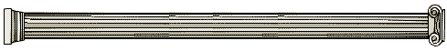
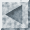

My grateful thanks are due to Alan Levy for kindly allowing me to quote from his article "Scientology. A True-Life Nightmare" © 1968, Time, Inc. (Life Magazine; Nov.15 1968).
I am indebted to the following Newspapers for their kind permission to reproduce the undermentioned material:
"The Guardian" - The case of Paulette Cooper (Feb 9 1980) and quotations from 'Seized papers reveal sect's leader as more than a guru' (Feb 12 1980).
The "News of the World" - The story of Zandra Stainforth (May 4 1969).
"The Times" - The article entitled 'Corfu expels scientology group' (March 19 1969).
Acknowledgements are also due to H. M. Stationary Office (Hansard), the "News of the World", "The Guardian", the "Daily Express", "The Daily Telegraph", "The East Grinstead Courier", "Sunday News" (Belfast), "Cape Times" (S.A.), "Herald Tribune" (U.S.) and "Reader's Digest" for Headline "Snapshots of Scientology".
Finally I must express my special thanks to Costas Daphnis for valued suggestions and for writing a perspicacious Foreword.
John Forte, Corfu, 1980.

Last updated 12 January 1997
by Chris Owen (co@nvg.unit.no)